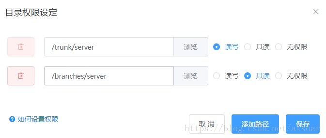
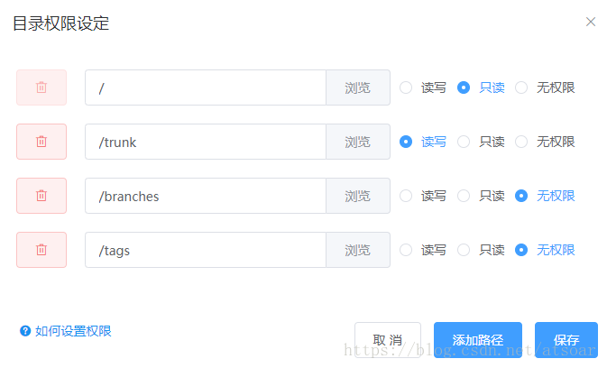

svn权限设置
2021年4月2日
SVN可以做到文件级的权限控制，可以为你团队中不同角色的人分配不同的权限。
本篇文章讲解在SVNBucket中如何配置svn的权限
权限分为3类：读写；只读；无权限
我们提供两种配置方式，不同的效果，可以根据你的实际情况选择
方式一，设置哪些目录有权限
如下图，直接指定哪些目录用户有权限读写。
这种设置方式比较安全，用户只能读写指定的目录，就算增加了新文件夹，只要不是它的子目录，他都是没有权限看到的，但是缺点就是checkout的时候不能从根目录checkout，你只能从有权限的那个目录检出，如果是有多个目录，就要分别checkout了。

方式二，设置哪些目录无权限
这种配置方式最大的好处就是让你可以从根目录checkout
如下图，假设我根目录有trunk、branches、tags三个目录，现在只想开放/trunk给开发人员，那么根目录/我们设置只读（这样他才能从根目录检出），/trunk目录设置读写，其他目录都设置为无权限。
这样配置就可以从根目录检出了，但是也存在一定的风险，例如，某天在根目录又多加了一个 xx 目录，如果你忘了给这个目录设置无权限，那么所有用户都会有 xx 目录的权限。

两种设置方式各有优缺点，大家自行选择，如果是追求安全，建议选择第一种方式。